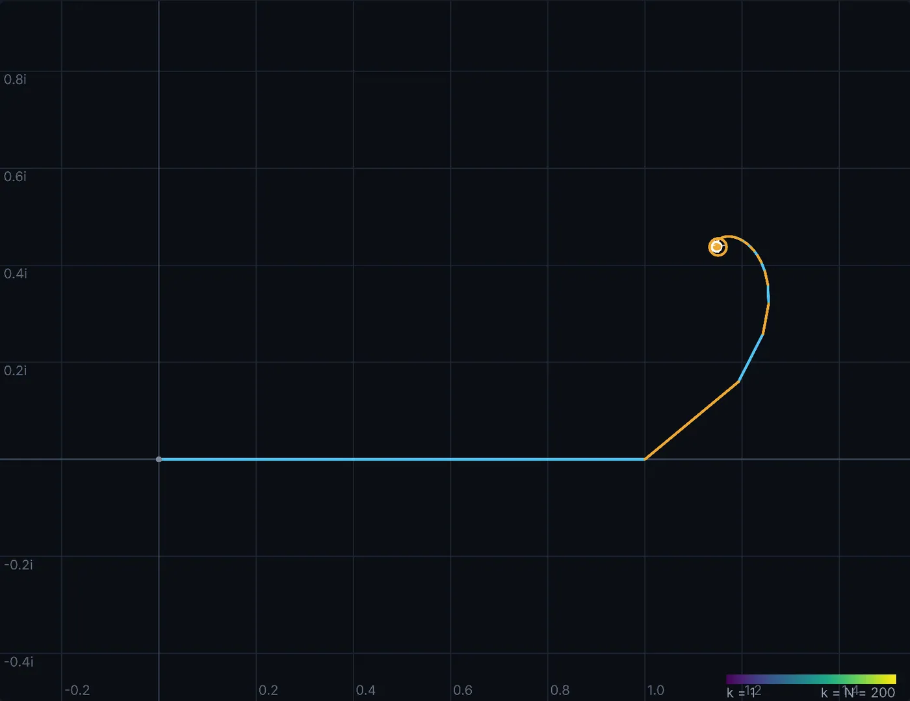
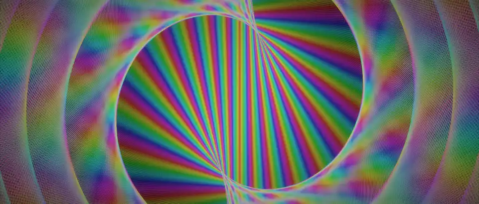
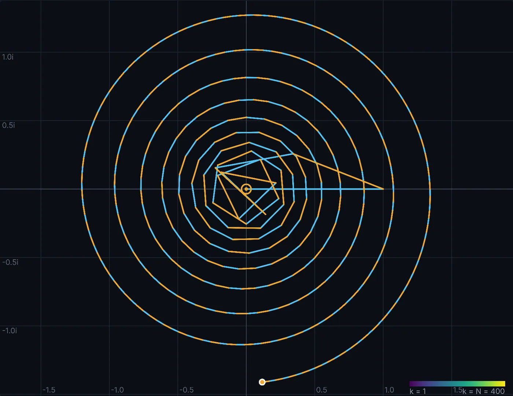
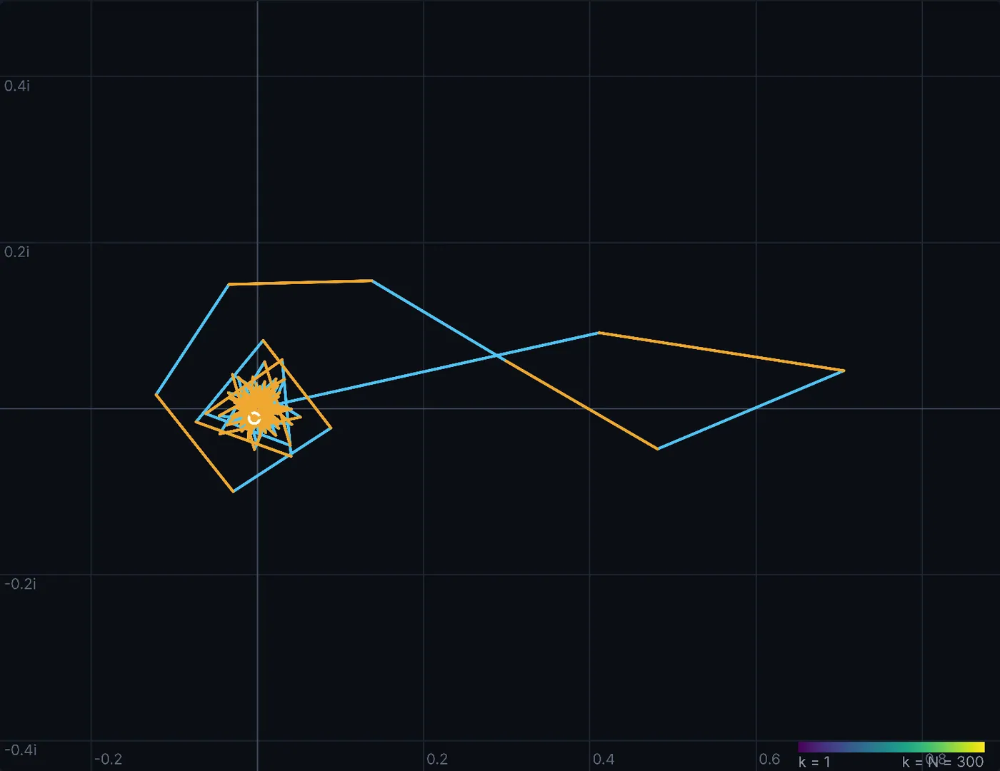
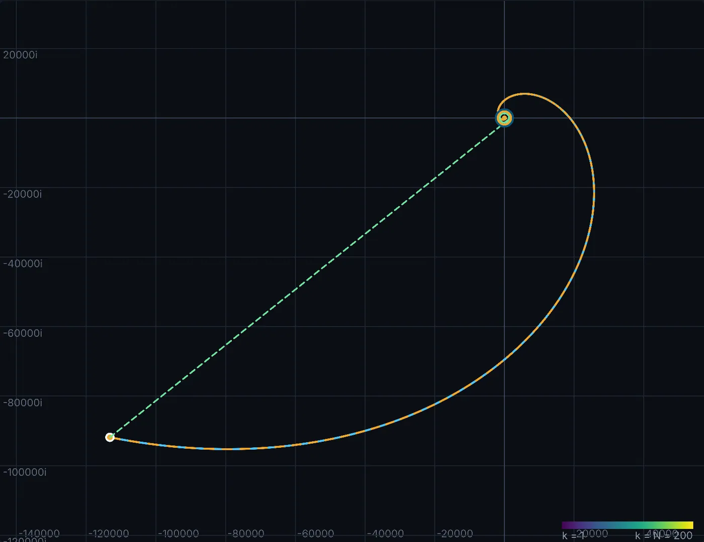
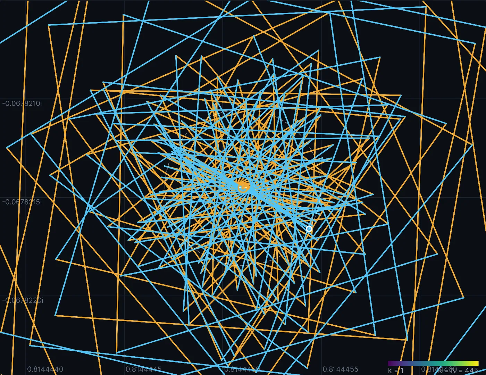
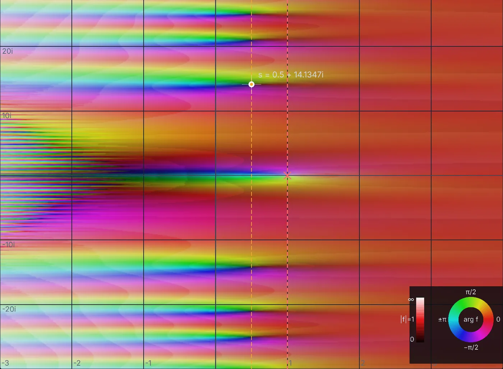
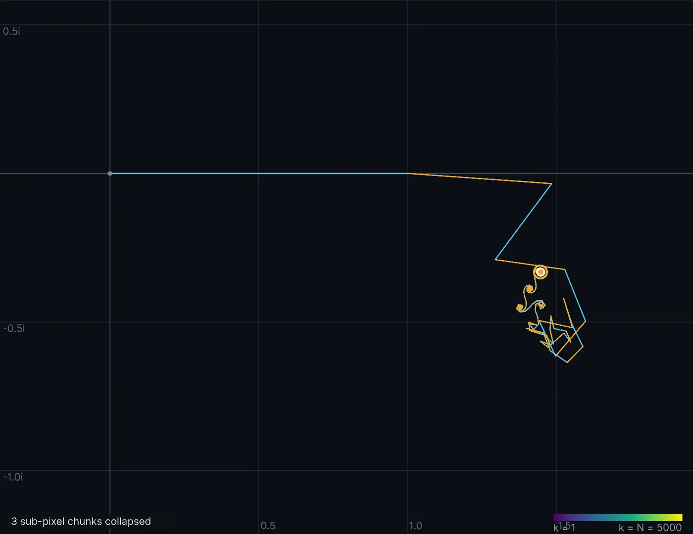

01
Pick a point. Watch the sum land.
At s = 2 − i the steps shrink quickly and the path spirals straight in on ζ(s), the ring. This is what convergence looks like.

Scroll to climb
The Riemann zeta function sits at the centre of the most famous unsolved problem in mathematics. Proving where its zeros lie is one of the seven Millennium Prize Problems, with a million-dollar reward.
Its zeros govern how the prime numbers are spread out. And the statistics of their spacing match the energy levels of heavy atomic nuclei, as if they were the notes of some undiscovered quantum system.
The function is built from a sum: take a step, turn slightly, take a smaller step, forever. Lay the steps end to end and they draw a path. This is that path, computed exactly, as we climb.
Low down, each turn of an eye takes only a few steps: loose lines.
Climb, and a few dozen steps per turn weave a double spiral.
Hundreds per turn, and rims appear, one for each turn of the arms.
Thousands fuse into a solid eye. Every frame is summed exactly.
Colour each step by its number mod 100, and a hidden lattice condenses at the centre.
Now lift each step by how far along the path it lies. The flat eye turns out to be the shadow of an hourglass: every line just touches a double cone.
Climb to a height of one trillion. Now 376,126 steps make each turn, and the eye sits near step 106 billion.
Pull out of the eye, across ten orders of magnitude. Its centre lands exactly where the Riemann–Siegel formula predicts, to within 2×10−8.
Fly down the walk, past curl after curl, each one smaller, toward the middle.
At step 398,942 the walk’s two halves meet in one great curl: the only place where a step and its mirror image coincide.
Pull back: all 200 billion steps, lifted into space. The first half wanders like a random walk; the second climbs a staircase of curls, each the mirror of a step in the first.
Rendered for this page from the exact sum, continuing from the film Rising.
Take one step, turn slightly, take a smaller step.
Repeat a few hundred billion times.
Behind the most famous unsolved problem in mathematics is a path that draws eyes, coils and mirror images. Partial-sum Spiral lets you explore it live and follow it in film, exactly, at scales no ordinary calculation can reach.
The same arithmetic, followed into 3-D, down microscopes and up to heights of 1020.


Two of the films, each one computed frame by frame from the exact sum.
Each term of the sum is a step: σ sets its length, t its direction. Laid end to end, the steps draw these spirals.
Most pictures stop at small heights, because higher up ordinary computer arithmetic keeps too few digits of each step’s direction. The spirals still look like spirals; they’re just the wrong ones, and nothing warns you.
Partial-sum Spiral keeps every step exact, out to a height of a trillion and a path of 200 billion steps. I set the mathematical and visual direction and built it with coding agents.
The lab is the interactive half of the project: a laboratory for the zeta function that runs entirely in your browser. You choose a point; it draws what the sum does there, exactly.
 Left: the domain. Every point is a value of s; the colour is ζ(s) there. Click or drag to choose one.Right: the sum. Each term is a step, laid end to end. The ring marks the true value of ζ(s).
Left: the domain. Every point is a value of s; the colour is ζ(s) there. Click or drag to choose one.Right: the sum. Each term is a step, laid end to end. The ring marks the true value of ζ(s).Each picture below is the lab’s own output pane, captured as you would see it.

At s = 2 − i the steps shrink quickly and the path spirals straight in on ζ(s), the ring. This is what convergence looks like.


Move to the first zero, s = ½ + 14.1347i. The ordinary series (left) spirals outward forever, even though ζ is exactly zero there. Switch to the alternating series (right) and the same point folds into a knot on the ring. That difference is analytic continuation, made visible.

At s = −1.5 + 3i the steps grow instead of shrinking and the path runs off toward 105. Turn on the Euler–Maclaurin tail and a correction (dashed) carries it straight back to ζ(s). The same trick is why 1 + 2 + 3 + … can be said to equal −1/12.

At height t = 1399.31 with N = t/π, each step turns exactly half a turn from the last, so the path keeps passing through one centre. Hundreds of steps stack into a star. The same geometry, at a trillion, is the eye in the films.

The domain pane colours every value of ζ at once: hue is the argument, lightness the size. Zeros are the points where all the colours meet; the bands on the left are the trivial zeros. Twelve colourings are built in, from phase portraits to conformal grids.

At Im s = −924.5 and five thousand terms the path ends in curlicues. Swap in a Dirichlet L-function, the Möbius or Liouville series, a power series, or a formula of your own; lift the path into 3-D; push to 300 million terms with a camera that follows the structure.
Open the lab Nothing to install. Designed for a desktop or tablet screen.
Each step’s direction is the angle t·log n, and only the fraction left over after whole turns matters. At t = 1012 that product runs into the trillions, so the app carries it in double-double precision with exact reduction, error-compensated sums and a multi-resolution path store computed in Web Workers. The films add high-precision phase anchors, level-of-detail drawing and separate picture and annotation layers. Results are checked against high-precision references.
| System | Scale | What that means |
|---|---|---|
| Interactive app | Up to 3 × 108 terms in the interface | Explore paths of up to 300 million terms live in a browser. The screen draws a budgeted summary of the path, not every term. |
| Full-path film data | t = 1012 N = 2 × 1011 | A C program walks all 200 billion steps and keeps an adaptive summary; the renderer picks the detail each frame needs. |
Interactive app. The app ships with 88 embedded test cases. On a fresh run, the largest partial-sum error (relative to max(1, |reference|)) was 3.62 × 10−13; the zeta reference agreed with embedded mpmath values to 2.49 × 10−12. One case misses the self-test’s strict 10−12 threshold by a hair (1.008 × 10−12), so the self-test currently reports pass: false. The October 16 design note records 137 checks against 30-digit mpmath through t = 1013 and a 171-million-terms-per-second run on 20 processes with numba; that Python backend and suite weren’t recovered for this review, so those figures are historical.
Higher. The implementation uses 200-bit fixed-point logarithms generated at 75 decimal digits, integer phase reduction, then float64 phases and complex128 coordinates. The recorded comparison to 90-digit mpmath samples eight offsets at each of eight heights through 1022, with maximum reported discrepancy 1.1 × 10−16 turns. Full-sum gap comparisons in that report stop at 1012.
A fresh bounded check compared six local steps at each nominal height 1013 and 1022 with 90-digit phase calculations. Maximum step differences relative to the pivot step were 9.82 × 10−16 and 9.11 × 10−16. This checks sampled local steps, not full sums or zeta values at those heights.
The recorded 3.4–4.6 ms timings refer to a 4,000-term local data calculation. Film drawing and encoding are separate costs. No current end-to-end throughput benchmark is claimed here.
Partial-sum paths, curlicues, and their relation to the zeta function have a long mathematical history. This project’s contribution is its combination of precise computation, interactive views, camera and scale choices, and films that expose the structure. It makes no claim to have invented partial-sum spirals or proved a new result about zeros.
An earlier geometric treatment: Nickel, Geometry of the Riemann Zeta Function (2013). Definitions and analytic continuation: NIST Digital Library of Mathematical Functions, definitions and analytic continuation of ζ.